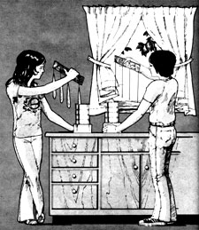
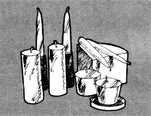
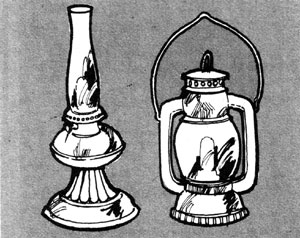

. . . And I said to the man who stood at the gate of the year: "Give me a light that I may tread safely into the unknown," and he replied: "Go out into the darkness and put your hand into the hand of God, and that shall be to you better than light and safer than a known way . . . . "
-Anonymous
Most of nature's animals go to bed at dark . . . but not man. He likes to stay awake after the absence of natural light and, therefore, needs something which enables him to see.
Still, that "something" doesn't have to turn on with a switch. When we built our Going Back Cabin we didn't wire it for electricity. "Conserve energy" is the national theme now, isn't it? . . . and that fits right in with our own return to simpler ways.
I'll admit I had qualms. When I moved my typewriter (manual) to the cabin, I was apprehensive about whether I'd be able to get any writing done without Mr. Edison's brainchild. Well, I can: The good natural light pouring in the north window gives plenty of see-how. And for night reading, the tall-chimneyed, bright-mantled Aladdin lamp is as adequate as a hundred-watt bulb. (The necessary kerosene is scarce but, so far, can still be found.)
Yes, there are ways to produce illumination without modem methods . . . not so many, maybe, but enough . . . especially for the challengelover. The following are some of the possibilities:
How far that little candle throws his beams!
So shines a good deed in a naughty world.
-Shakespeare
The old reliable candle was man's main source of fight for at least 2,000 years. That's a long time, during which lots of folks lived and died and left their marks without ever knowing about electricity.
To my mind, this ancient lighting method is a pleasant one. The smell of burning wax gives me a comfortable feeling . . . probably because of some association with church. (By the way, did you know that a lighted candle will quickly eliminate tobacco fumes and other unpleasant odors?)
We've always kept candles around the house. The bought kind, however, are made largely from paraffin wax-a petroleum product-and might become scarce . . . so, in the course of our goingback trek, we decided to make our own. A search through our books plus some from the library turned up numerous formulas that were too involved and required a lot of purchased junk. Nevertheless, we did discover some recipes we like . . . and they require the following:
BEESWAX. This substance is made only by honeybees, and the process is most laborious. To manufacture two pounds of wax the worker must consume some 28 pounds of honey . . . and I don't know who counted, but someone says that she and her comrades must visit 25,000 flowers to produce each pound of the golden sweet. Once the food is inside her tiny tummy (or wherever), it's partly converted to building material which she deposits to help construct her hive's comb.
What with all that trouble, it's no wonder that beeswax candles are the most expensive. The material-in its pure form-is pale yellow, very hard and bums with a good substantial light. Even mixed with a softer substance like tallow or bayberry wax, it still gives admirable results.
We've only just begun to keep bees and had no surplus wax on hand when we started our candlemaking project, so we bought a five-pound hunk for $2.50 from some industrious neighbors. Because of the expense, we make our dips of about one-third beeswax and two-thirds tallow.
TALLOW AND LARD. Tallow is the hard, coarse fat of beef cattle and sheep. (The best grade, I understand, comes from the suet surrounding the bovine kidney . . . but who can be picky?) Lard is the fat of hogs. Both are rendered out by a heating process.
Tallow-with lard as second choice-was used for lamp oil by this country's first settlers. It was simply melted, and some-thing for a wick was placed down inside a container of the liquid fat and lighted. Such grease lamps smoked and their odor wasn't especially pleasant . . . but they did give light, nonetheless.
All tallow candles feel greasy and are rather soft. Add just a mite of beeswax, though, and they'll straighten their backs like little iron men. (Note: besides being indispensable for candles and soap, tallow is great to rub on a sticky iron-if you use such a thing-and is an excellent remedy for chapped hands and lips.)
I bought 25 pounds of mixed beef and mutton tallow from the local market at a nickel a pound. The first batch I cooked out-with the aid of water-was a flop . . . but won't be wasted, because we can use it to make soap and the pretty grease lamps called fairy lights.
The second cooking turned out better. I added not a drop of water this time, but simply cut the fat into very small pieces and started it off on a slow fire. Soon the tallow was bubbling away in its own oil, and I let it simmer until a spoonful turned hard when cooled on a saucer.
Then we poured the hot liquid into every flat pan in the kitchen, including two muffin tins. When the fat cooled we sliced the larger slabs like gingerbread-the "muffins" were very nice for storage just as they came from the molds-and put the chunks away in a cool place. Now, when we feel in a candle-dipping mood, we dig out the makin's and hop to it.
BAYBERRY. For the longest time we had this tree confused with the sweet bay, which is a member of the magnolia family and bears a fragrant, lemony-smelling flower but hasn't a drop of wax in its fruit.
The southern (or black) bayberry, we know now, is a quite different shrublike species that produces a gray-white fruit thickly coated with wax. A bushel of these little jewels will yield four or five pounds of green, aromatic material . . . enough for gobs of candles, especially when added to other waxes or fats.
We're told that the bayberry grows along the Atlantic coast and as far west as Louisiana (that's us). So far, though, we haven't been able to come upon even one tree. Our search continues.
PARAFFIN. As long as it's available, paraffin wax can be used alone to make good candles . . . or stretched with tallow, or blended with beeswax for something special.
On the advice of Chuck Ferrero (MOTHER NO. 13) I checked with the local oil companies in the hope of finding a 55-pound case of paraffin, but the two firms here have never stocked the product and wouldn't even talk about trying to order it for me.
WICKS. Someone described the wick as the sou a candle. It can be made from twisted grass, dried moss or almost any natural fiber, including cotton. Thread crocheted into a chain stitch works well . . . or you can plait three strands of cotton yam tightly, soak the braid in vinegar and let it dry.
Thanks, but I'll just spend my wick-plaiting time in search of the elusive southern bayberry. So far, we amateurs have purchased our wicking at the dimestore for 4 cents a foot.
DIPPING. Making dipped candles-the kind we like best-is a simple but time-consuming task. If you're fresh out of patience and haven't an hour to spare, don't attempt this job. It's only for those who wish a kind of peace in their hearts along with the satisfaction of doing something constructive.
Our first dipped candles were beeswax. The unmistakable fragrance of honey filled the kitchen as we melted the golden chunks . . . using a double boiler because the molten material is flammable. When the wax had completely liquefied and become very hot, we removed it from the stove to a cooler spot and began to dip. (The length of the candle depends on the depth of the vessel which contains the makings. A onepound coffee can suits us.)
I had my wicks all rigged up in advance . . . four of them, taped three or four inches apart to a stick I found in the woodbox. Dipping is done one wick at a time, in and out quickly (don't linger or the heat will keep the wax melted off). In and out, one at a time, over and over. Each candle will shape up quicker than you think . . . but you do have to keep cutting off the wax that collects below the wick, or you'll end up with a conical, non-burning product.
We've enjoyed experimenting with our various candle concoctions . . . and if something doesn't turn out as we like, we melt the whole conglomeration and begin again.
MOLDS AND CANDLEHOLDERS. I've ordered a candle mold from MOTHER'S General Store (which also carries most of the other supplies you need for this craft). Hurry that shipment, MOTHER! Meanwhile, some improvised casting from paper cups and cans has turned out OK.
If you don't want to buy candleholders, you can make many different kinds at home. Or a candle can be melted a bit on the bottom and made to stick on any dry surface . . . or impaled on a nail driven into a block of wood . . . or simply stood in a can.
REFLECTORS. Edith Wharton, a novelist born during the Civil War, said, "There are two ways of spreading light: to be the candle or the mirror that reflects it." She was right ... any small gleam, like that of a candle, can be more intensely focused in one direction by bouncing it off a looking glass or other shiny surface (tin or a similar bright metal will do).
Rushes are grasslike plants that grow in wet places and have hollow or pithy stems. Long ago, they used to be burned like candles: A length of the dried stalk-stripped to its core-was soaked in grease or oil, held in an iron clamp and lighted at one end. Sweet-smelling herbs were sometimes roasted in a little pan above the flame if the odor was intolerable.
The cattail-a member of the rush family-grows densely in a neighboring slush pit where we often go to gather the many products of this most versatile plant . . . including stalks for rushlights. The stem is easily stripped with a very sharp knife, to reveal the thick, porous, fabric-like material inside. Removing this is like peeling an orange: Sometimes you can pull out quite a long section before it breaks, sometimes not.
Since the cattails were quite dry at the time we collected our first batch, I proceeded at once to soak the freed "wicking" in melted tallow. I then clamped a piece in an old lampwick holder (a clothespin will also do to clip a length of rush to any makeshift stand) and lit the end. The pith burns away cleanly, with no ashes or soot, and gives a light about twice that of a kitchen match. Several such flames adequately illuminate a large room.
I also experimented with dipping a length of rush several times in a molten beeswax-tallow mixture. This hardened the flimsy pith and made it stand up straight like a candle. My invention gave a nice light but did appear to smoke some.
In case you were wondering, an eight-inch length of tallowed rush bums for 35 minutes (I timed it). A lot can be done in that period, and more pith can be lit when the first piece is consumed. The rushlight, in short, is really a remarkable device . . . one that we'll use often.
A very delicate and beautiful effect is obtained by burning sweet-gum balls swimming in a dish of oil or grease. I place five in a shallow bowl of melted tallow and-after waiting several minutes for the little globes to become saturated-touch a match to them. They give a flickering, elfin glow and several such arrangements on a table create a very festive appearance.
The Aladdin lamp is really the very best indoor lighting device, in our opinion (as long as kerosene is available, that is).
Just one illuminates our 16' X 24' cabin quite well and we read by it with all ease.
Aladdin lamps were very popular up until about 30 years ago, and will probably once again be much in demand. MOTHER'S General Store and many other outlets stock them with all their accessories.
Lanterns of long, long ago must have been very crude: mere perforated metal containers with one or more candles inside. W e made one from a large fruit can, and I must say that the night would surely have to be dark for our homemade gadget to give much light. It does make interesting lacy patterns, however, and would-I gluess-be comforting to take along on late trips to the john.
The Coleman excels among modern lanterns, as far as I know . . . but alas, it uses white gas and that too will probably soon be in short supply. As a compromise, we have two kerosene lanterns made by Dietz which give a passable light for outdoor night chores and such.
Four to six splinters a couple of feet long make a fine torch for outdoor fight . . . if you can find the right wood. I'm referring to rich (or fat) pine, which is filled with resin and turpentine and ignites almost like magic.
According to the U.S. Forest Service, rich pine is actually heartwood (the dead inner portion of the trunk) as opposed to sapwood (the living outer layer). It seems that as the tree grows, the inmost cells-those farthest from the oxygen supply-become clogged with resin and eventually die . . . although the plant as a whole is alive.
Pines under 50 years old contain only negligible amounts of heartwood. Back when trees were allowed to grow old gracefully there was plenty of kindling material around, but it's becoming scarce now because of the demand for younger timber or pulpwood. Occasionally, though, we still find old pine stumps or felled trunks with very rich hearts. (I understand that the resin keeps the core from rotting along with the rest of the dead fiber.)
Actually, any stick or slim piece of wood dipped in animal fat, tar or pitch will afford adequate torchlight. In fact, all vegetable oils-linseed, olive, grapeseed, what have you-can be burned. There's even a candlefish, which is so oily it will hold a good flame when dried, wedged in a split stick and lighted. I don't think we have any such creatures around here, though . . . they're found in the waterways of the northern Pacific. (Yes, Virginia, there is a candlefish. . . otherwise known as Thaleichthys pacificus or eulachon and native to the west coast from northern California to Alaska.-MOTHER.)
I should mention, finally, that all kinds of battery -operated lights are available . . . but somehow they don't appeal to me. I'll admit that I almost had a change of heart about such devices recently when I came across one with two fluorescenttype tubes and a light level that could be adjusted from soft to very bright. The only drawback was the $30.00 price tag.
If equipment of this type becomes more widely used in the future, there may be a corresponding rise in demand for battery chargers. Perhaps such machines will be installed at service stations or roadside depots so we can bring in our storage cells to be renewed. Seems reasonable, anyway.
When we, as a nation, were asked to save energy, my feeling was, "It's about time." Maybe that's because the simple life our family has loved these past few years has made us more careful of the earth's gifts: the resources that have been so sorely misused, abused and overused by us all. In my opinion, this shortage or whatever it is will help us to discipline ourselves . . . something we've needed (at our house, anyhow) for a long time.
Perhaps that accounts for the scrumptious feeling I get when I wash the lamp globes, trim the wicks and fill the containers with oil. As I go about this chore I recall the Bible story of the wise and foolish virgins who did and didn't have their lamps ready, and I tell it to the children. They already know the parable, but I repeat it anyhow each time I do the lamps . . . and each time they give one another, and me, a smile of courteous tolerance.
As a last resort-if none of these lighting alternatives suits your fancyyou can just brush off your feet and get into bed. Night was made for sleeping anyway, and the sun in all its glory will rise tomorrow, I betcha.
What soul was his, when, from the
naked top of some bold headland,
he beheld the sun rise up, and
bathe the world in light.
-William Wordsworth
|
|
 |
 |
|
 |
|
|